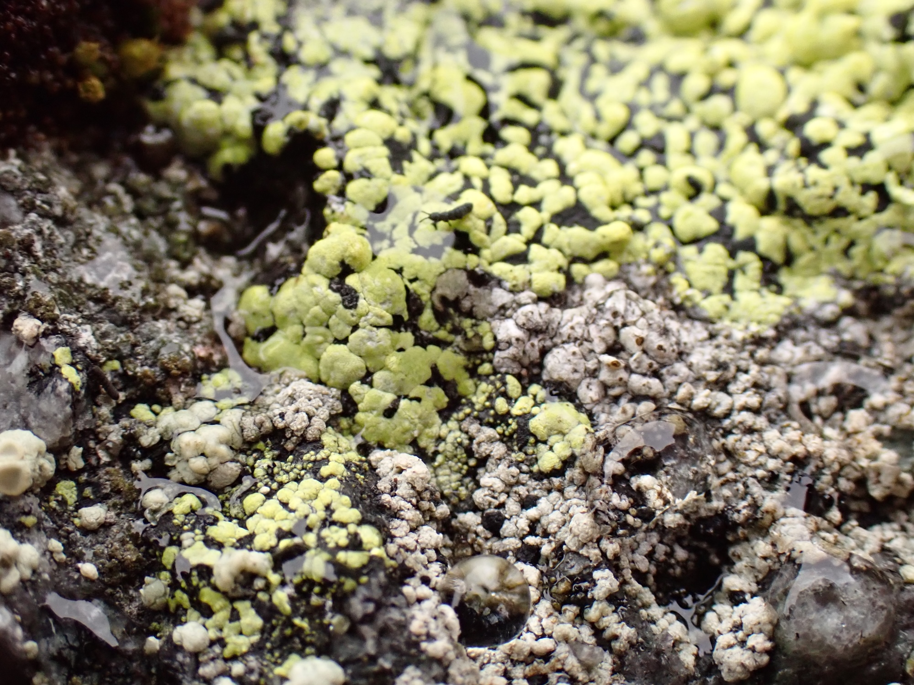
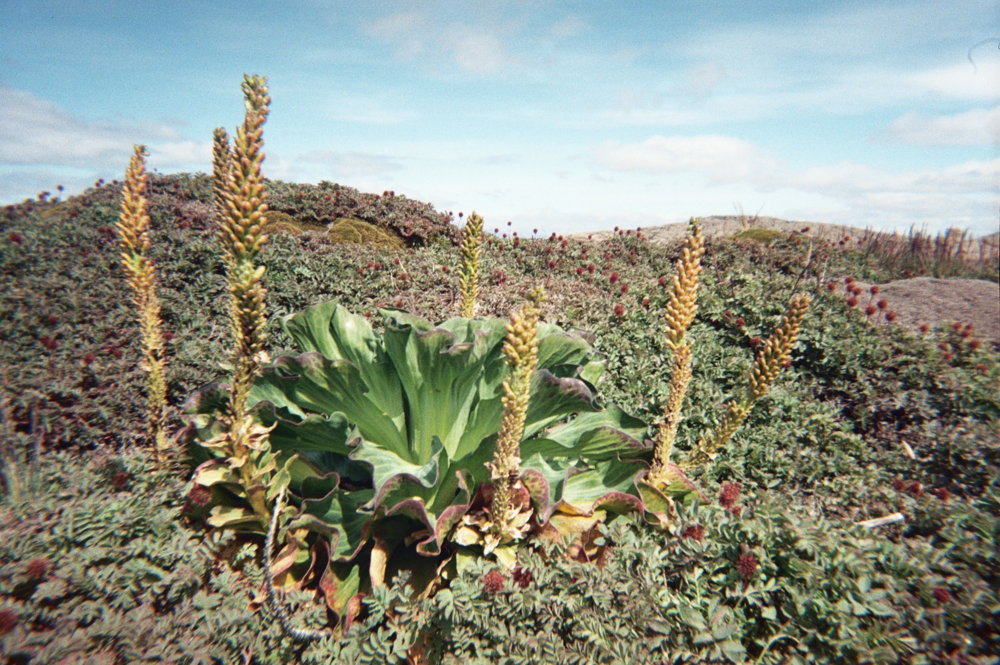

Research themes
Threats to Antartic terrestrial biodiversity

Local impacts of Antarctic tourism
There is life on land in Antarctica, and I'm not talking about penguins. In my current work, I'm applying a mix of big data and on-the-ground field studies to better quantify the impacts of tourism on Antarctic species that most people don't know exist and to improve monitoring techniques for these plants, invertebrates, and fungi.

Invasive species in the sub-Antarctic
My PhD thesis focused on the interactions between climate change and invasive species in the sub-Antarctic, and how these can interact to threaten native biodiversity in the Îles Kerguelen. I remain fascinated by sub-Antarctic islands, which have been heavily impacted by human activity in the last few centuries despite their remoteness.
Network approaches to biodiversity conservation

Unipartite, bipartite, and beyond
In addition to my polar work, I'm interested in how we can apply network approaches to understand ecological dynamics and how we can leverage this knowledge to better manage and protect at-risk species. To me, the best thing about network approaches is their flexibility, which I've leveraged in a variety of environmental (e.g., boreal forest, prairie, and tundra) and ecological (e.g., food webs, plant-pollinator networks, multilayer networks) contexts.